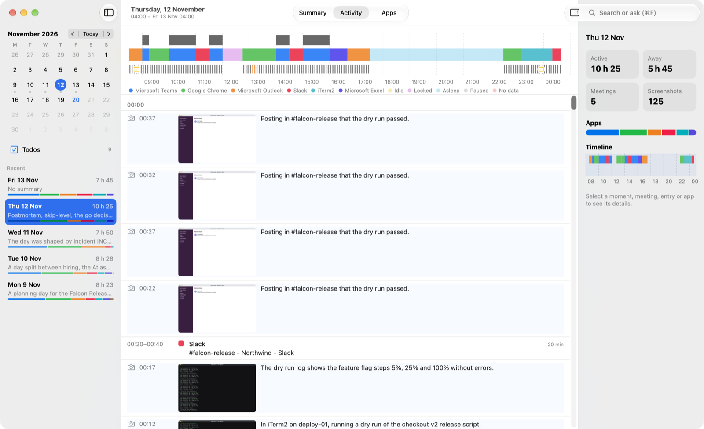
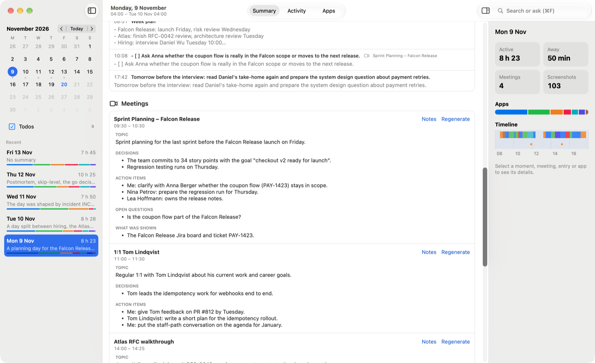
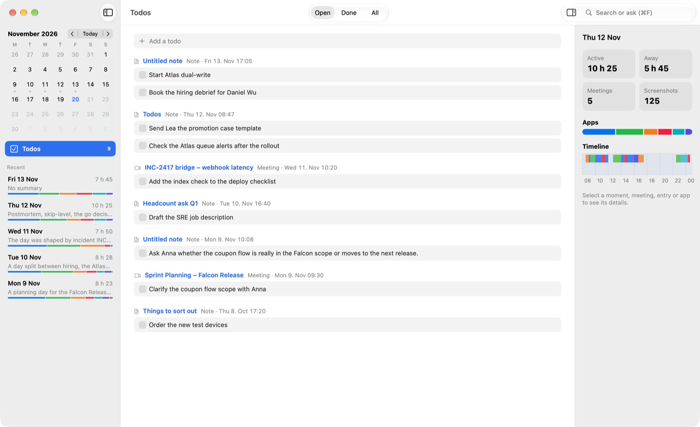
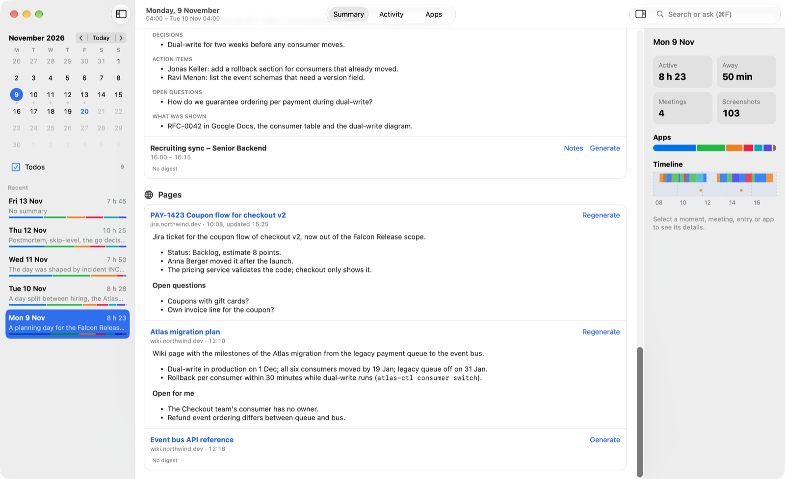
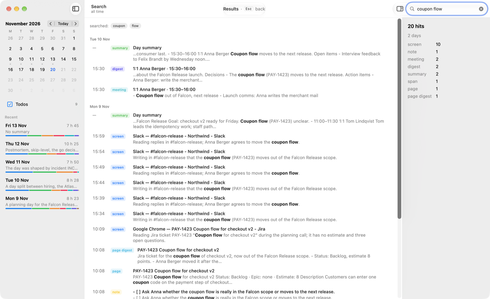
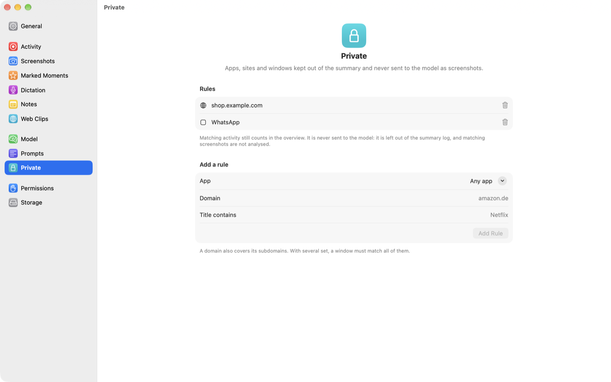

daily-recall
Remembers what you did on your Mac.

A macOS menubar app that records your workday and writes the recap.
Daily Recall records which window you have in front, takes a screenshot of the active window every few minutes and notices when you are in a Teams call. At the end of the day, a language model you choose turns that record into a summary of what you worked on. All data stays in a folder on your Mac, and requests go only to the endpoint you set, for example a model server on your own machine.
Features
Day summary
- “Generate summary” sends the day’s log to your model and shows the result as Markdown: overview, main activities, meetings, open items, and sections for marked moments, notes and pages read when the day has them.
- Every summary is stored as a version, together with the exact prompt that was sent.
- Nothing runs on its own. A summary starts only when you ask for one, for any past day.
- A day runs from 04:00 to 04:00 by default, so work after midnight counts toward the day it started.
Activity timeline
- Each switch of the front window becomes a span with app, window title and, for Safari, Chrome and Brave, the tab URL.
- A window counts after it stays in front for 5 s, so apps you pass while tabbing don’t clutter the timeline.
- Idle (after 5 minutes without input), locked, asleep and paused show as gaps.
- Every 5 minutes it screenshots the active window, scaled to at most 1500 px. A vision model describes each shot in up to three sentences.

Meeting digests
- A meeting is recorded while Microsoft Teams has the microphone open. It starts after 10 s and ends 15 s after the microphone closes.
- A notes window opens next to the call, with a call timer and the meeting title taken from Teams.
- 10 minutes after the call, your model writes a digest from the title, your notes and everything recorded during the meeting: topic, decisions, action items, open questions, what was shown.
- In the day summary, the digest replaces the meeting’s raw spans and screenshots.

Notes, dictation and todos
⌃⌥⌘Nopens a Markdown note from any app.⌃⌥⌘Vopens one with dictation already running.- Dictation runs on your Mac with Apple’s speech models. Nothing is sent to a server and no audio is kept.
- Type
/for a menu with/todo,/time,/headingand/speak. Todos are plain- [ ]lines and show as checkboxes. ⌃⌥⌘Mcaptures the front window as a marked moment with a note. The summary always includes it.

Clipped pages
- The Daily Recall Clipper extension for Chrome and Brave clips the current page as Markdown with
⌥⇧C, also behind a login. - Each clip gets a short digest, and the day summary gets a “Pages read” section.
- Clipping the same page again on the same day replaces it.

Search
⌃⌥⌘Ffrom any app searches screenshot descriptions, notes, meetings, digests, summaries, clipped pages and window titles across all days.- Keyword hits appear immediately, grouped by day.
- With a model configured, questions work too. “When did I talk to Anna?” lists calls and chats per person. “What did we decide about Atlas?” gets an answer with numbered sources.

Menubar
The app lives in the menubar. The menu shows the tracking state and any pending or failed analyses, and lets you pause for an hour or until tomorrow.

Privacy
Everything is stored in one folder on your Mac,
~/.config/daily-recallby default. Requests go only to the model endpoint you configure.
- Private rules. Mark an app, a domain or window-title text as private. Matching windows are not screenshotted for analysis, and the model sees only a gap, with no app, title or time range.
- Retention. Screenshot images are deleted after 14 days by default, once their description exists. The text stays.
- Note windows are excluded from screen capture.
- Dictation is transcribed on the Mac. The scratch audio is deleted after each dictation.
- About me, a few sentences of context you write, goes to the model with every request. Leave it empty if you prefer.

Requirements
- macOS 26 or later
- An OpenAI-compatible chat completions endpoint with a vision model, for example llama.cpp’s
llama-serveror LM Studio. See model server. - Microsoft Teams (the new app) for meeting detection. Zoom, Meet and classic Teams are not detected.
- Chrome or Brave for web clips
Getting started
- Open the DMG and drag Daily Recall to Applications. Start it.
- The “Welcome to Daily Recall” window opens. Nothing is recorded until you select “Get Started”.
- Select “Open…” next to “Grant permissions”. In Settings › Permissions, “Open Settings” under Screen Recording adds Daily Recall to the list in System Settings. Turn it on there.
- Grant Accessibility in System Settings › Privacy & Security › Accessibility. Window titles appear within 2 seconds.
- Select “Set Up…” next to “Connect a model”, enter the base URL including
/v1, for examplehttp://localhost:8080/v1, and run “Test Connection”. - Optionally write “About me” and review the prompts. Then select “Get Started”.
- macOS asks for Automation the first time Safari, Chrome or Brave is in front, so the tab URL can be read. It asks for the Microphone the first time you dictate.
- Work as usual. In the evening, open the overview from the menubar and select “Generate summary”.
More detail: install, configuration, prompts, data folder.
downloads
- dmgDailyRecall-0.7.0.dmg9.9 MB
changelog
- v0.7.02026-11-17
- Notes and meeting notes get a slash menu with /todo, /time, /heading and /speak.
- Todos are Markdown checkboxes in notes. A Todos list in the overview collects them from all notes and meetings.
- A browser extension for Chrome and Brave clips the current page. Each clip gets its own LLM digest.
- Back-to-back Teams calls are recorded as separate meetings.
- v0.6.02026-11-11
- A welcome window guides a new install through permissions, model and prompts.
- Typed and spoken notes are now one kind of note. Dictation writes straight into the note.
- Two running copies no longer record into the same data folder.
- Thinking can now be turned off on LM Studio.
- v0.5.02026-11-03
- Search across all days, with answers to questions from your configured model.
- Markdown notes from any app with a global hotkey.
- Dictation into notes, transcribed on your Mac.
- v0.4.02026-11-02
- Each finished Teams meeting gets an LLM-written digest.
- Prompts and "About me" can be exported and imported as a JSON file.
- Private activity is no longer sent to the model in any form.
- v0.3.02026-11-02
- Screenshots show only the active window by default.
- Private rules keep apps, domains or window titles out of the summary.
- v0.2.02026-11-02
- First release with activity tracking, screenshot analysis, the daily overview and summary, marked moments and Teams meetings.